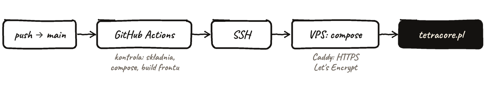

/api/docsdokumentacja API (OpenAPI): https://tetracore.pl/api/docs
co 3 hna serwerze działa też skaner Biblioteki Reklam Meta
Sprawdzenie działania podczas oceny nie wymaga żadnego klucza ani konta. Wersja online to ten sam kod co w repozytorium (docker-compose.prod.yml, sekcja 08).
02 / Wymagania
Wystarczy Docker
Minimum
Zalecane
system
Windows 10/11 z Docker Desktop (backend WSL2), macOS z Docker Desktop, Linux z Docker Engine
–
Docker Compose
2.20 lub nowszy (docker compose version)
najnowszy
RAM dla Dockera
8 GB
12–16 GB (Docker Desktop → Settings → Resources)
miejsce na dysku
25 GB
35 GB
internet
przy pierwszym starcie (obrazy, pakiety, modele ok. 3 GB)
Nie trzeba instalować Pythona, Node.js ani bazy danych – wszystko działa w kontenerach. Pełna lista bibliotek, modeli i usług z licencjami: LICENCJE.pdf.
03 / Uruchomienie
Jedna komenda
git clone <adres repozytorium> tetra
cd tetra
docker compose up -d
Po zakończeniu otwórz http://localhost:8080. Plik .env nie jest potrzebny – wszystkie ustawienia mają wartości domyślne (sekcja 06).
Co się dzieje przy pierwszym starcie
Etap
Usługa
Czas (orientacyjnie)
pobranie obrazów Postgres, Neo4j, Caddy, Node
–
1–3 min
budowa obrazu z modelami ML (PyTorch, InsightFace, Playwright…)
app
15–30 min
budowa frontu
web
1–2 min
schemat bazy, pobranie modeli (obraz, tekst, audio), baza twarzy
init
5–15 min
start API, frontu, skanera
api, web, scheduler
< 1 min
opcjonalnie: wczytanie paczki z data/BACKUP i data/DANE
seed (w tle)
15–25 min
docker compose up -d czeka, aż init pobierze modele, i dopiero wtedy uruchamia API – przy pierwszym starcie komenda może pracować kilkanaście minut. Postęp:
docker compose logs -f init # modele
docker compose logs -f seed # wczytywanie paczki (jeśli jest w data/)
docker compose ps # stan usług; init i seed kończą się statusem „Exited (0)”
Każdy kolejny start trwa kilkanaście sekund – modele są w wolumenie models, obraz w cache Dockera, a init i seed niczego nie liczą od nowa.
ten sam obraz z JupyterLab – narzędzia wiersza poleceń
stale
Co
Adres
Dane logowania
front (GUI)
http://localhost:8080
–
API i dokumentacja
http://localhost:8000/docs
–
Neo4j Browser (kopia grafu)
http://localhost:7474
neo4j / fakecollector
JupyterLab (narzędzia zespołu)
http://localhost:8888
token fake
PostgreSQL
localhost:5432
fake / fake, baza fakecollector
05 / Dane
Paczka organizatora i baza osób
Materiały z paczki (opcjonalnie)
Dane NASK nie są w repozytorium (regulamin zakazuje ich rozpowszechniania). Żeby od razu mieć kartotekę kampanii, rozpakuj paczkę do folderu data/ tak, by powstały data/BACKUP/p1…p15 i data/DANE/1…61, przed pierwszym docker compose up -d. Usługa seed wczyta je sama, gdy baza jest pusta.
uwaga przy rozpakowaniu
Archiwum jest szyfrowane – użyj 7-Zip.
Windows Defender i inne antywirusy usuwają zapisane strony scamów (pliki HTML). Dodaj folder projektu do wyjątków antywirusa przed rozpakowaniem, inaczej materiały będą bez tekstu.
Wczytanie później albo innego folderu (record add przyjmuje plik, folder przypadku albo folder z wieloma przypadkami):
docker compose exec api python -m fakecollector.record add data/MOJE_MATERIALY # analiza i zapis
docker compose exec api python -m fakecollector.grouping rebuild # kampanie od nowa
docker compose exec api python -m fakecollector.graph sync # kopia grafu w Neo4j
Baza referencyjna osób (opcjonalnie)
Pozwala nazwać osobę widoczną na zdjęciu. Zdjęć nie ma w repozytorium – mają różne licencje (LICENCJE.pdf).
init zbuduje wektory twarzy przy następnym starcie (albo od razu: docker compose run --rm init).
Czysta baza
docker compose down
docker volume rm fakecollector_pgdata fakecollector_neo4jdata # modele zostają w fakecollector_models
docker compose up -d # seed wczyta data/ od nowa
docker compose down -v usuwa wszystkie wolumeny, także pobrane modele (ponowne pobieranie ok. 3 GB).
token Meta Ad Library API – bez niego skaner reklam nie działa, reszta tak
ADLIB_TRYB
na_zywo
na_zywo albo odtwarzanie (zapisane odpowiedzi z data/adlib/nagrania, bez sieci)
IMAGE_MODELS
wszystkie
modele obrazu pobierane przez init
PRELOAD_MODELS
1
1 = modele tekstu i audio pobierane przy starcie; 0 = przy pierwszej analizie
SEED_DIRS
data/BACKUP data/DANE
foldery wczytywane przez seed do pustej bazy
SEED_ASR
1
0 = wczytywanie bez transkrypcji filmów (szybciej)
TORCH_INDEX
wersja CPU
źródło PyTorcha (GPU: docker-compose.gpu.yml)
Progi i parametry modułów są w config/obraz.toml (obraz), config/adlib.toml (skaner) i w kodzie grupowania (src/fakecollector/grouping/compare.py) – każdy z opisem źródła wartości.
Token Meta Ad Library API
Załóż aplikację na developers.facebook.com i potwierdź tożsamość dla Ad Library API (facebook.com/ads/library/api).
W Graph API Explorer wygeneruj token użytkownika; w Access Token Debugger przedłuż go do ok. 60 dni.
Wpisz go do .env: META_ACCESS_TOKEN=… i uruchom ponownie: docker compose up -d.
Stan skanera: http://localhost:8000/adlib/status; skan od razu: docker compose exec scheduler python -m fakecollector.adlib --raz.
07 / Sprawdzenie działania
Testy i ewaluacja
docker compose exec app python scripts/smoke_test.py --fast # bez ciężkich modeli, ok. 2 min
docker compose exec app python scripts/smoke_test.py # pełny test, ok. 5 min
Testy, które potrzebują paczki organizatora, są pomijane („POMINIĘTO”), gdy nie ma jej w data/. Ewaluacja grupowania (wymaga paczki i etykiet w data/labels.csv, opis w METODYKA.pdf, sekcja 11):
docker compose exec app python -m fakecollector.eval labels # szkic etykiet z obecnych kampanii (do przejrzenia)
docker compose exec app python -m fakecollector.eval run # raport: data/eval/raport.md
08 / Wdrożenie na serwer i CI/CD
Ten sam kod na publicznym serwerze

docker-compose.prod.yml uruchamia postgres, neo4j, api (pod /api), scheduler i web – Caddy, który sam pobiera certyfikat HTTPS (Let's Encrypt) dla domeny z .env. Porty 80 i 443 to jedyne wystawione na zewnątrz. Demo działa na VPS: 6 vCPU, 12 GB RAM.
git clone <adres repozytorium> ~/tetra && cd ~/tetra
cat > .env <<'EOF'
COMPOSE_FILE=docker-compose.prod.yml
DOMAIN=twoja-domena.pl
POSTGRES_PASSWORD=…
NEO4J_PASSWORD=…
META_ACCESS_TOKEN=… # opcjonalnie – skaner reklam
EOF
docker compose up -d --build
docker compose run --rm api python -m fakecollector.bootstrap # raz: schemat bazy i modele
Domena musi wskazywać (rekord A) na adres serwera, zanim Caddy poprosi o certyfikat.
Workflow
Uruchamia go
Co robi
back.yml
push do main w src/, config/, scripts/ …
sprawdza składnię Pythona i docker-compose.prod.yml, potem przez SSH: git pull i docker compose up -d --build api scheduler
front.yml
push do main w front/
buduje front i sprawdza Caddyfile, potem przez SSH: docker compose up -d --build --no-deps web
Ustawienia repozytorium (Settings → Secrets and variables → Actions): zmienne VPS_HOST, VPS_USER, sekrety VPS_SSH_KEY (klucz prywatny do logowania), VPS_KNOWN_HOSTS (wynik ssh-keyscan serwera). Oba workflowy mają wspólną grupę concurrency, więc dwa wdrożenia nie nakładają się na serwerze.
09 / Front w trybie deweloperskim
Dla zespołu
cd front
npm install
npm run dev # http://localhost:5173, API: http://localhost:8000 (VITE_API_URL)
10 / Problemy
Objaw → rozwiązanie
Objaw
Przyczyna i rozwiązanie
429 Too Many Requests przy pobieraniu obrazów
limit Docker Hub dla niezalogowanych → docker login i ponów
build przerywa się (Killed, brak pamięci)
za mało RAM dla Dockera → zwiększ do ≥ 8 GB w ustawieniach Docker Desktop
docker compose up -d długo „czeka”
przy pierwszym starcie init pobiera modele – docker compose logs -f init
init zgłasza, że nie pobrał modelu (np. MagFace z Google Drive)
system działa bez niego (moduł obrazu zgłosi brak); ponów: docker compose run --rm init
port zajęty
zmień port w .env (np. WEB_PORT=8081)
antywirus pokazuje „zablokowano adres” podczas analizy linku
ochrona sieci hosta blokuje stronę scamu otwieraną w kontenerze – to bezpieczne; system analizuje wtedy zapisane materiały i oznacza stronę jako niedziałającą
materiał z paczki ma 0 słów tekstu
antywirus usunął plik HTML – rozpakuj paczkę ponownie z wyjątkiem w antywirusie
skaner reklam: „brak tokenu”
ustaw META_ACCESS_TOKEN w .env
pull access denied for fakecollector-app
stara wersja Compose – zaktualizuj Docker Desktop albo najpierw docker compose build
nie otwieraj linków ze scamów we własnej przeglądarce
System otwiera je wyłącznie w kontenerze (Chromium w obrazie app, adresy sieci prywatnej zablokowane).